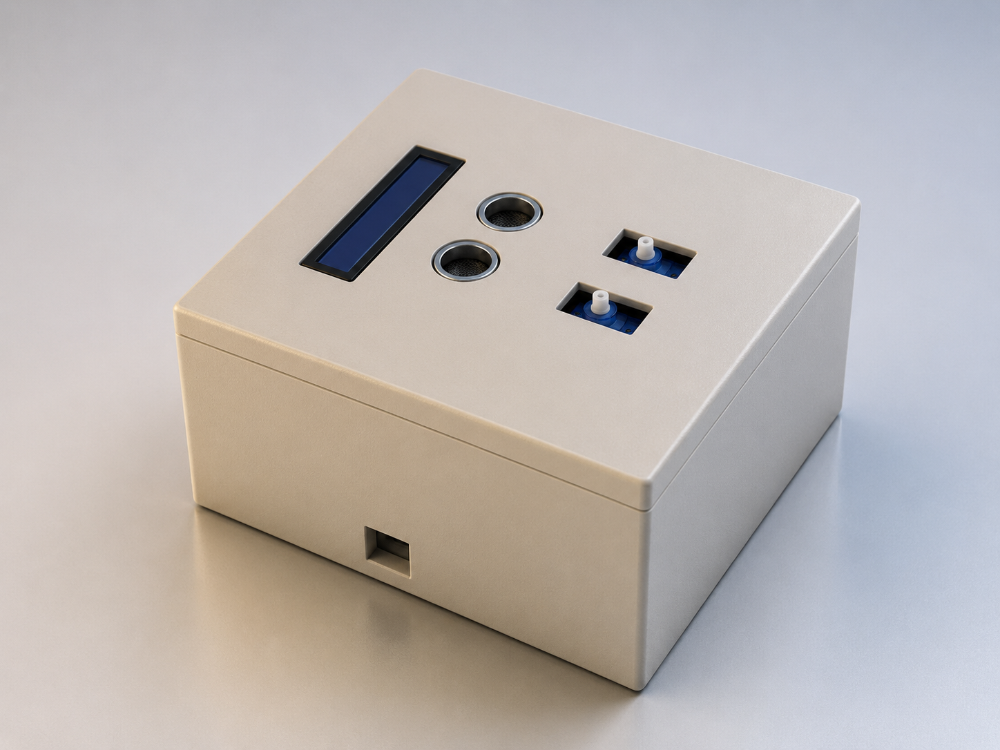

Phase 01 — Prototype
AquaSense
Automatic Water Dispenser
A sensor-based automated water dispensing system designed to provide contactless operation using ultrasonic detection, servo control, and real-time user feedback.
Arduino Uno
HC-SR04
Embedded C++
Mechatronics
